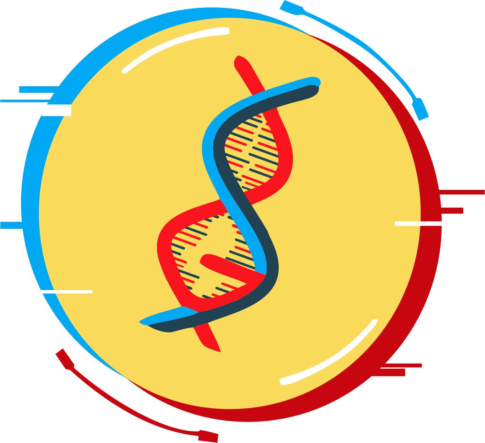
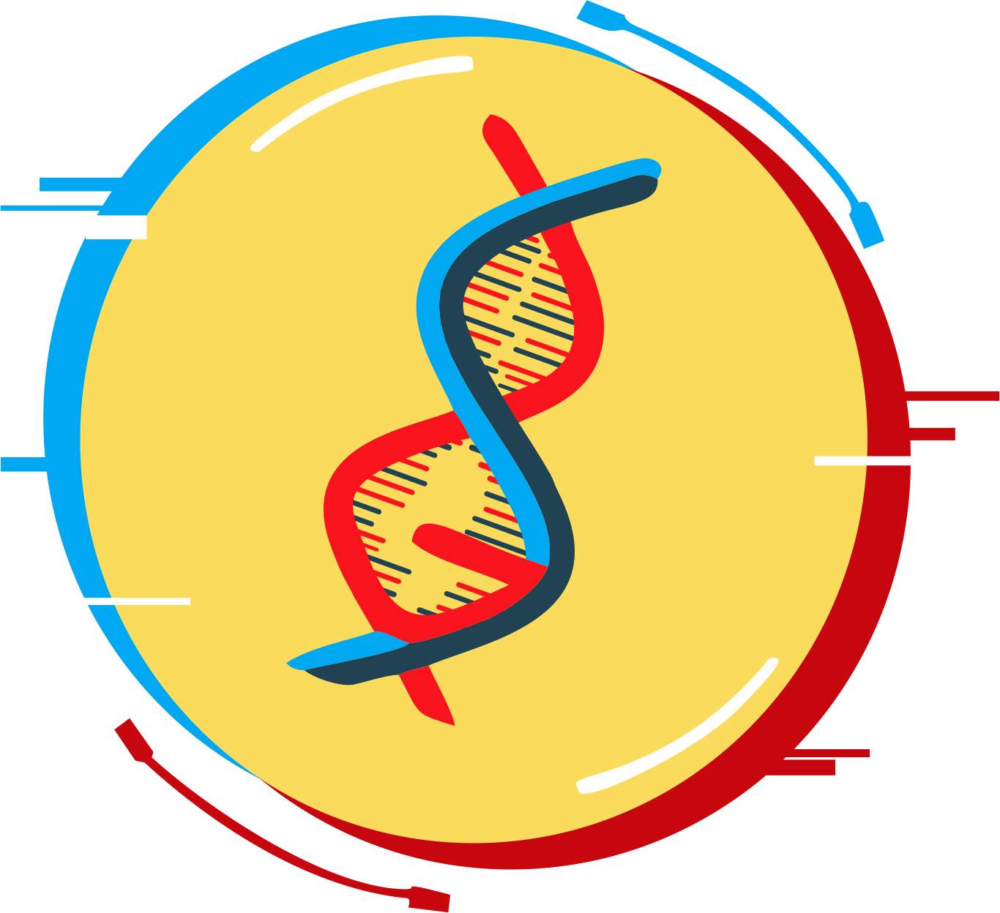

FESTIVAL BEASISWA NUSANTARA
"Elevating Education : Unlocing Futures With Scholarships"
Festival Beasiswa Nusantara "Elevating Education: Unlocking
Futures with Scholarships" adalah suatu perayaan pendidikan tinggi
yang bertujuan untuk menginspirasi dan memberikan peluang
pendidikan yang lebih baik. Dengan tema "Elevating Education"
(Meningkatkan Pendidikan), acara ini didedikasikan untuk membuka
pintu akses yang lebih luas ke pendidikan tinggi melalui pemberian
beasiswa.
Berdasarkan data yang dikutip dari Badan Pusat Statistik (BPS)
mengemukakan bahwa angka putus sekolah di Indonesia terus
mengalami peningkatan di setiap tahunnya. Pada Tahun 2021, angka
putus sekolah untuk tingkat SD sebesar 0,65%, kemudian di Tahun
2022 bertambah menjadi 0,71%. Lalu, angka putus sekolah untuk
tingkat SMP di Tahun 2021 sebesar 6,77%, kemudian di Tahun 2022
bertambah menjadi 6,94%. Untuk angka putus sekolah di tingkat
SMA/sederajat di Tahun 2021 sebesar 21,47%, kemudian di Tahun 2022
bertambah menjadi 22,52%. BPS mencatat terdapat sekitar 76%
keluarga mengalami penyebab utama anak putus sekolah karena
terkendala ekonomi.
Biaya pendidikan yang sulit dijangkau dapat membuat banyak individu berbakat menjadi terhambat dalam meraih pendidikan ke jenjang yang lebih tinggi lagi. Individu dari latar belakang ekonomi yang kurang mampu seringkali mengalami kesulitan untuk memperoleh akses ke pendidikan tinggi yang berkualitas. Selain itu, banyak daerah pelosok di Indonesia yang masih memiliki keterbatasan dalam infrastruktur pendidikan sehingga tingkat kesadaran akan peluang beasiswa sangat rendah dan minimnya akses informasi merupakan hambatan tambahan yang harus segera diatasi.{" "}
Festival Beasiswa Nusantara diinisiasi sebagai upaya konkret untuk mengatasi berbagai macam hambatan yang terjadi. Acara ini bertujuan untuk menjadi wadah yang memfasilitasi akses informasi tentang berbagai jenis beasiswa yang tersedia di Indonesia maupun di luar negeri. Melalui seminar, lokakarya, dan pameran beasiswa, festival ini akan memberikan kesempatan bagi calon mahasiswa untuk memahami proses pengajuan beasiswa, memotivasi mereka untuk lebih bersemangat dalam melanjutkan pendidikan yang lebih tinggi lagi, serta memberikan dukungan yang dibutuhkan untuk mengatasi hambatan-hambatan yang mereka hadapi. Dengan demikian, Festival Beasiswa Nusantara diharapkan dapat berperan dalam mendukung pendidikan yang lebih inklusif dan merata di Indonesia, sehingga setiap individu, terlepas dari latar belakang mereka, memiliki kesempatan yang sama untuk meraih pendidikan tinggi yang berkualitas.
Biaya pendidikan yang sulit dijangkau dapat membuat banyak individu berbakat menjadi terhambat dalam meraih pendidikan ke jenjang yang lebih tinggi lagi. Individu dari latar belakang ekonomi yang kurang mampu seringkali mengalami kesulitan untuk memperoleh akses ke pendidikan tinggi yang berkualitas. Selain itu, banyak daerah pelosok di Indonesia yang masih memiliki keterbatasan dalam infrastruktur pendidikan sehingga tingkat kesadaran akan peluang beasiswa sangat rendah dan minimnya akses informasi merupakan hambatan tambahan yang harus segera diatasi.{" "}
Festival Beasiswa Nusantara diinisiasi sebagai upaya konkret untuk mengatasi berbagai macam hambatan yang terjadi. Acara ini bertujuan untuk menjadi wadah yang memfasilitasi akses informasi tentang berbagai jenis beasiswa yang tersedia di Indonesia maupun di luar negeri. Melalui seminar, lokakarya, dan pameran beasiswa, festival ini akan memberikan kesempatan bagi calon mahasiswa untuk memahami proses pengajuan beasiswa, memotivasi mereka untuk lebih bersemangat dalam melanjutkan pendidikan yang lebih tinggi lagi, serta memberikan dukungan yang dibutuhkan untuk mengatasi hambatan-hambatan yang mereka hadapi. Dengan demikian, Festival Beasiswa Nusantara diharapkan dapat berperan dalam mendukung pendidikan yang lebih inklusif dan merata di Indonesia, sehingga setiap individu, terlepas dari latar belakang mereka, memiliki kesempatan yang sama untuk meraih pendidikan tinggi yang berkualitas.
Beberapa Aspek yang menjadi tujuan utama Festival Beasiswa
Nusantara adalah diantaranya :
- Mendukung Akses Pendidikan Tinggi yang lebih Inklusif
- Memberikan Informasi Beasiswa yang Komprehensif
- Mendorong semangat belajar dan pengembangan diri bagi pelajar
- Membentuk Jaringan dan Kolaborasi antara lembaga beasiswa, pendidik, dan pencari beasiswa
- Memperkuat Pendidikan Tinggi di Indonesia
Kegiatan ini akan dilaksanakan pada :
- Hari, Tanggal :Sabtu - Minggu, 25 - 26 November 2023
- Tempat :Komplek Gedung Nusantara DPR/MPR/DPD RI, Jakarta
LIPUTAN BERITA RCTI
FESTIVAL BEASISWA NUSANTARA 2018
SCHOLARSHIP TALK

Organized By:
 
